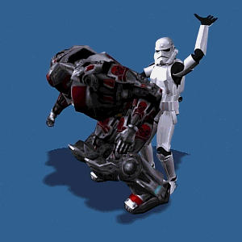
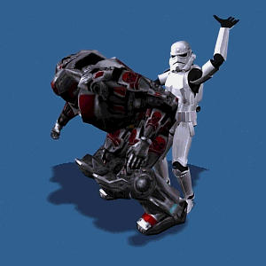
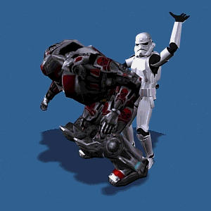

"THE TENTH DAY"
(Remember to be more guarded in the beginning and more gradually to disclose what is to be clarified here
)
The farther we advance, the more thoroughly we may inform the reader about certain facts we were obliged to no more than hint at in the earlier part of the story
We are able, for example, presently to advise him of the purpose of the morning visits and searches conducted in the children's quarters, the cause of their punishment when in the course of these inspections delinquents were found, and just what were the delights Messieurs tasted in the chapel: the subjects were expressly forbidden to go to the toilet or in any other place to move their bowels without individual and particular permission, this in order that there be held in reserve matters which could, as the occasion rose, be doled out to those who desired them
The visit served to determine whether anyone had neglected to comply with this order; the officer of the month carefully inspected all the chamber pots and other receptacles, and if he found any that were not empty, the subject concerned was immediately inscribed in the punishment register
However, provision had been made for those who could hold back no longer: they were, a little before the midday meal, to betake themselves to the chapel Messieurs had converted into a privy so designed that our libertines were able to enjoy the pleasure which the satisfaction of these pressing needs had the power to procure them, and the others, who had been allowed, or who had been able, to keep their loads, had the opportunity to be rid of them at some time or another during the day and in that manner which most pleased the friends, and above all in that particular manner upon which full details will subsequently be provided, for these details will compass all the manners of indulging in this voluptuous delight
"And there was yet another cause which led to the distribution of punishment, and it was the following one: what is called in France the bidet ceremony did not exactly please our friends; Curval, for example, could not bear to have the subjects with whom he came to grips wash themselves; Durcet's attitude was identical, and so it was that the one and the other would notify their duennas of the subjects with whom they planned to amuse themselves the next day, and these subjects were forbidden to wipe, rub, or wash themselves in any way and under any circumstances, and the two other friends, who did not share this abhorrence of tidiness and for whom dirt was not by any means essential, nevertheless concurred with Curval and Durcet, aided in maintaining and agreeable state of affairs, and it after having been told to be impure a subject took it into his head to be clean, he was straightway added to the fatal list"
""
That is what happened that morning to Colombe and Hébé; they had shitted during the previous
night's orgies and, knowing that they were listed to serve coffee on the following day, Curval, who planned to amuse himself with both of them and who had even advised them that they would be expected to fart, had recommended that things be left just as they were
The children did nothing to themselves before going to bed
"Inspection arrived, and Durcet, aware of the instructions Curval had given, was perfectly amazed to find them as neat as a pin; forgetfulness was the excuse they offered, but their names went down in the register nevertheless"
No chapel permissions were granted that morning
"(We should like the reader to make a particular effort to remember what we mean by such an expression; this will dispense us from having to repeat our explanations"
) Calculations of what would be required during the storytelling period forbade any prodigality until that time
Upon this day the boys' masturbation lessons were suspended, for they had entirely served their purpose, and every one of the little lads frigged as expertly as the cleverest whore in Paris
""
Zéphyr and Adonis led the pack in skill, speed, and deftness, and there are few pricks which would not ejaculate nigh to bleeding were they to be ministered by little hands as nimble and delicious as theirs
Nothing worth citing occurred until coffee; it was served by Giton, Adonis, Colombe, and Hébé; these four children had, by way of preparation, been stuffed with every decoction which is best able to provoke winds, and Curval, who had proposed to be treated to farts, received a generous quantity of them
The Duc had himself sucked, or rather licked, by Giton, whose little mouth simply could not manage to engulf the enormous machine tendered him
"Durcet performed some choice little horrors with Hébé, the Bishop thigh-fucked Colombe"
Six o'clock sounded, they moved into the auditorium where, everyone having taken his post, Duclos began to recount what you shall read:
A new companion had very recently come to Madame Fournier's; owing to the role she is going to play in the account of the passion which follows, I believe I should give you at least a rough sketch of her
She was a young seamstress, debauched by the seducer I earlier mentioned having observed at Guérin's, and she also worked for Fournier
She was fourteen, had chestnut-brown hair, sparkling brown eyes, the most voluptuous little face in all the world, skin lily white and satin smooth, very trimly made she was, although rather inclining to fleshiness, from which slight disadvantage there resulted the sweetest, cutest, the plumpest ass, the fairest, oh 'twas possibly the finest ass in Paris
I was stationed at the hole in the partition and soon beheld the man who was to deflower her, for she was yet a maid on the other side, nothing could be plainer
Such a tidbit could only have been fed to someone very much beloved of the house: he was the
venerable Abbé de Fierville, equally renowned for his wealth and his debauchery, and he had the gout to his very fingertips
He arrives swathed to the eyes in a mantle, installs himself in the chamber, examines all the equipment he is about to use, prepares everything, and then the little girl arrives; her name is Eugénie
"Somewhat frightened by her first lover's grotesque face, she lowers her gaze and blushes"
"Come hither, come hither," says the libertine, "and show me your behind
"
"Oh, Monsieur…" murmurs the shy little thing
""
"Come, come," fumes the old roué, "nothing worse than these novices; she just can't imagine anyone should wish to look at an ass
"Well, by the Saviour, get your damned skirts up"
"
"And, stepping closer for fear of displeasing Fournier, whom she has promised to be very obedient, she finally pulls her skirt halfway up from behind"
""
""Higher, do you hear, higher," cries the pleasant old rascal"
""Do you suppose I'm going to bother to do it myself?""
And in due time the beautiful ass is completely exposed
The man of God scrutinizes it, has her stand straight, has her bend forward, has her squeeze her legs tight together, has her separate them and, leaning her over the bed, spends a moment crudely, nay, uncouthly rubbing all his frontward privities, which he has brought to light and with which he now prods and pushes Eugénie's matchless bum, as if to electrify himself, as if to attract to himself some of that lovely child's essential heat
From this he passes to kisses, he falls to his knees in order to be more at his ease, and with both hands holding those superb buttocks as far apart as possible, both his tongue and lips rummage about in search of treasure
"They're right," says he, "you do have a passably fine ass
"Have you been shitting recently?""
"Just a little while ago, Father," the little one answers
"Madame had me do that before coming up
"
"Why, that's nice… and so there's nothing left in your bowels," says the lecher
""Well, we're going to see"
"
And catching up the syringe, he fills it with milk, returns to behind his object, brandishes the
nozzle, plunges it into the vent, and shoots out the fluid
Having been told what to expect, Eugénie submits to everything; no sooner is the remedy in her entrails than he lies down on the bed and orders Eugénie to come at once and straddle him
""Now," says he, "if you've got anything to do, have the kindness to do it in my mouth"
" The timid creature has taken her place as she has been told to do, she pushes, the libertine frigs himself, his mouth, sealed hermetically to her asshole, catches every drop of the precious liquid that leaps out of it
He swallows it all, giving evidence of the greatest scrupulousness in this matter, and just when he swills down the final mouthful, his fuck escapes and he is hurled into a delirium
But what is this strange mood, this cloud of loathing which, as in the case of almost every other libertine, comes to darken a mind whence the entire illusion has fled? Brutally casting the little girl far from him once he has done, the saintly man readjusts his cleric's garb, says that he has been cheated, deceived, for this child, he swears, had not priorly shitted, no, they'd lied, she'd come to him full of shit, and he'd swallowed half her turd, fie upon them
It is to be noted that Monsieur l'Abbé wanted milk only, not shit
He grumbles, he curses, he storms, says he won't pay, won't ever come back, says he'll be damned if he'll stir himself for little snotfaces like this one, and goes off shouting a thousand other invectives I'll surely have occasion to report to you in connection with another passion in which they play a major role rather than, as in this instance, a very subordinate one
"Well, by God," Curval remarked, "there you have a very fastidious man who'll get upset over swallowing a little shit when there are I don't know how many who feast upon it
"
"Patience, Sire, patience," said Duclos, "allow my recitals to succeed each other in the order you yourselves dictated and you shall see the superior libertines you allude to achieve wonders on the stage
"
My turn came two days later
Instructions had been given me, and I stayed away from the water closet for thirty-six hours
My hero was an elderly ecclesiastic who served as chaplain to the King; like the aforementioned athlete he too was crippled with gout: he was only to be approached if one were naked, but one's front and breast had to be very thoroughly covered; much emphasis had been placed upon this latter article, and I had been warned that were he to catch the least glimpse of those parts, it would prove a heavy misfortune, I'd never be able to get him to discharge
"I approach, he studies my behind with extreme attentiveness, asks my age, asks whether it is true I have a great urge to shit, inquires as to the kind of shit I ordinarily produce, is it soft? is it hard? and a thousand other questions the asking of which, it seems to me, has the effect of animating him, for, as he chatters away his prick gradually lifts its head and leans toward me"
That prick, approximately four inches in length by two or three around, had, despite its brilliant sheen, something of so humble and so pitiful an air that one all but needed spectacles to
be certain of its existence
Solicited by my man thus to do, I laid firm hands on it, and noticing that my motion were rather well irritating his desires, he made ready to consummate the sacrifice
"But is it a truly authentic desire, my child," says he, "this desire to shit you mention? For I don't care to be deceived; come, let's see whether you do indeed have shit in your ass
"
And so saying, he buries his right hand's longest finger in my fundament, while with his left hand he sustains the erection I have excited in his desire
"That plummeting finger had no need to search far, the chaplain was swiftly persuaded I had, quite as I said, the sincerest wish to shit, and when his gropings contacted the object of our mutual concern, he flew into a perfect ecstasy:"
"Ah, by God's belly," he cries, "she tells the truth, the chicken is about to lay, and I feel the egg
"""
Enchanted, the bawdy old priest passes a moment kissing my bum, and observing the haste I am in and that I shall soon be unable to restrain the insurgent turd, he has me climb aboard on apparatus quite similar to the one your Lordships have here in the chapel; once seated, my behind perfectly exposed to his view, I was able to lodge my complaint in a receptacle located two or three inches from his nose
This apparatus had been built expressly for the chaplain, and he employed it frequently, for scarcely a day went by without him coming to Fournier's to assist in delivering either some girl attached to the house or some other from outside it
An armchair drawn close allowed him to observe the process from a point of vantage situated just below the ring supporting my ass
When we had taken our positions upon our respective thrones, he ordered me to commence the operation
For prelude, I release a series of farts; he inhales them
"The turd hoves into sight at last; he begins to pant"
""
"Shit, my little one, shit away, my angel," he cries, all afire
"Show me the turd coming forth out of your lovely ass
"

"And he aids the delivery, pressing his fingers about my anus, he facilitates the eruption; he frigs himself, he observes, he is drunk with lust, pleasure's excess finally transports him completely, he loses his head; his cries, his sighs, his fingerings, everything convinces me he is nearing the final stage and, turning my head toward him, I find I have judged correctly, for there is his miniature engine splattering a few drops of sperm into the same pot I have just filled"
The chaplain left in a good humor, and even assured me he expected he would honor me with another visit, which
promise I knew very well to be false, for it was common knowledge that he never saw the same girl twice
"Well, I appreciate his feelings in the matter," declared the Président, who was kissing Aline's ass
"One must be in our deplorable situation, one must be reduced to rack and ruin in order to be able to bear having the same ass shit twice
"
"Monsieur le Président," spoke up the Bishop, "there is a certain halting tone in your voice which leads me to suspect your prick is in the air
"
"Tush," Curval replied, "I'm merely kissing the buttocks of Mademoiselle your daughter, who hasn't even the courtesy to let fly one wretched little fart
"
"I am then enjoying better luck than you," the Bishop announced, "for Madame your wife, lo and behold! has just presented me with the most beautiful and the bulkiest turd…"
"Silence, gentlemen, silence, I say!" came from the Duc, whose voice seemed muffled as if by something covering his head
"Silence, by Jesus! we are here to listen, not to act
"
"Which is therefore to say, I take it, that you are doing nothing," inquired the Bishop, "and is it in order to listen that you are wallowing under three or four assholes?"
Well, you know, he's right
Go on, Duclos, it were wiser that we hear about foolish acts than commit them
"We must save our strength"
"""
And Duclos was on the point of resuming when they all heard the usual shouts and customary blasphemies that accompanied the Duc's discharges; surrounded by his quatrain, his fuck was escaping him as with Sophie, Zéphyr, and Giton he performed countless little wantonries of a kind very analogous to those Duclos had been describing
"Great God!" Curval exclaimed, "I can't tolerate these bad examples; there's nothing that makes me discharge like a discharge, and would you believe it? here's that little whore," he added, referring to Aline, "who only a moment ago could accomplish nothing at all and who is presently doing everything one could ask for… but no matter, I'll keep my grip
"Ah, you bitch, shit away, shit your head off, it will get you nowhere, I don't intend to give up my seed"
"
"I see very well, Messieurs," said Duclos, "that after having perverted you it is my responsibility to
"restore you to reason, and to do so I am going to resume my story without waiting for your command"
"
"No, don't you do it," cried the Bishop, "I am not as continent as Monsieur le Président, not I, my fuck's itching me, and it's got to be shed
"
Wherewith, he was seen very publicly to perform things the structure of this very complex fiction prevents us from revealing at this stage, but things whose delightful influence very rapidly brought leaping forth the fuck whose mounting pressure had discomfited the Bishop's thrice-blessed balls
"As for Durcet, absorbed in Thérèse's ass, nothing was heard from him, and in all likelihood Nature refused him what she lavishly granted the others, for he was not as a rule mute when accorded her favors"
Seeing that now at last calm had been restored, Duclos went on with her lubricious exploits
A month later, I came to grips with a man whom one had almost to violate in order satisfactorily to carry out an operation somewhat akin to the one I related several minutes ago
I shit upon a dish, I bring it to him and thrust it under his nose while he sits in an armchair quietly reading a book, seemingly unaware of my presence
He looks up, falls to swearing, asks how the devil can the girl have the insolence to do such a thing in his presence, but all the same it's a queer turd she's got there, he contemplates it, handles it; I ask forgiveness for the liberty I have taken, he continues to mumble incoherencies at me, and then discharges with his eyes fixed on the morsel of shit; and in so doing he says he'll find me again someday, that sooner or later he'll see to it that I get what I deserve
A fourth gentleman employed none but women of seventy or more in practices which were quite similar; I watched him enact his rite with an old creature who could not have been less than eighty
He was reclining upon a sofa, the matron was straddling him; she deposited her strange old package on his belly while frigging a wrinkled, shriveled prick which scarcely discharged at all
At Fournier's establishment we had another curious article of furniture: a kind of toilet chair, provided with the usual hole and set against the wall; things were so arranged that a man could lie in such a way that while his body extended into the neighboring room, his shoulders passed through an opening and his head occupied the place usually reserved for the chamber pot
I had been appointed to the task, and kneeling between his legs, I sucked his prick as best I could throughout the operation
Well, this extraordinary ceremony consisted in having a workman, who was paid to act a part whose full consequences he neither knew nor divined; in having, I say, a man of the people enter the room containing the chair, climb upon it, and do his business
squarely upon the face of the patient over whom I was toiling; but the shit bearer had absolutely to be a poor drudge fetched in from the humblest milieu, he had as well to be old and ugly, he was inspected before being put to work, and were he to lack any of these qualities, our libertine would have nothing to do with him
During all this, I saw nothing but heard rather a lot: the instant of collision was also that of my man's discharge, his fuck sprang down my throat the same moment the turd splashed upon his face, and when he emerged from beneath the chair and got to his feet, I saw by the state he was in that he had been handsomely served
By chance, after the exercise was over, I happened to meet the fellow who had performed so brilliantly; he was from the Auvergne, a good honest chap who earned his livelihood working with stonemasons; he seemed delighted to earn a crown by doing naught but ridding himself of what he would have had one way or another to expel from his bowels, and this little chore struck him as infinitely less arduous than carrying his hod
He was, what for his looks, quite dreadful to behold and must have been over forty
"Faith," muttered Durcet, "I think that should do it
"""
"And passing into his closet with the eldest of the fuckers, with Thérèse and Desgranges, he was heard braying and whinnying some minutes later; he returned but was disinclined to inform the company of the precise nature of the excesses whereunto he had surrendered himself"
"Supper was announced; it proved at least as libertine as ever, and after the meal, the four friends having been moved to spend the evening away from one another instead of frolicking together as they customarily did, the Duc went off to the boudoir at the end of the corridor, taking with him Hercule, Martaine, his daughter Julie, Zelmire, Hébé, Zélamir, Cupidon, and Marie"
Curval commandeered the auditorium, providing himself with what companionship Constance could afford him, for she fell to trembling every time she found herself with him, and he did exceedingly little to allay her fears; he also took Fanchon, Desgranges, Bum-Cleaver, Augustine, Fanny, Narcisse, and Zéphyr
The Bishop went into the drawing room with Duclos who, that evening, revenged herself upon the fickle Duc, who had led Martaine away from him; Aline, Invictus, Thérèse, Sophie, the charming little Colombe, Céladon, and Adonis completed the prelate's entourage
Durcet remained in the dining room
It was cleared, rugs and cushions were brought in and strewn all about
He encloseted himself, I say, with Adelaide, his beloved wife, with Antinoüs, Louison, Champville, Michette, Rosette, Hyacinthe, and Giton
More the redoubling of lecherous appetites than any other reason had doubtless dictated this arrangement, for brains were heated to such a point that evening that it was unanimously agreed no one would go to bed; it was perfectly incredible what was achieved in each room by way of infamies and impurities
"Toward dawn, their Lordships decided to return to table, although they had taken abundant drink throughout the night; everyone trooped into the dining room, there was an indistinct, promiscuous pell-mell, the cooks were awakened and soon sent in scrambled eggs, toast, onion soup, and omelettes"
Drinking was resumed, the company grew very merry, all save Constance who was plunged in inconsolable sadness
Curval's hatred was growing just as certainly as was her poor belly; she had that night during the orgies experienced the effects of his hostility, she had suffered everything but blows, for Messieurs had agreed to leave the pear to ripen; she had, I say, blows excepted, undergone every imaginable mistreatment; she though to complain to Durcet and to her husband, the Duc: they both bade her go to the devil and remarked that she must surely have been guilty of some fault which was hidden from their eyes, yes, surely, else how could she thus ever have displeased that most virtuous and most gentle of mortals; they wagged their heads and walked away
And then they all went to bed


 
